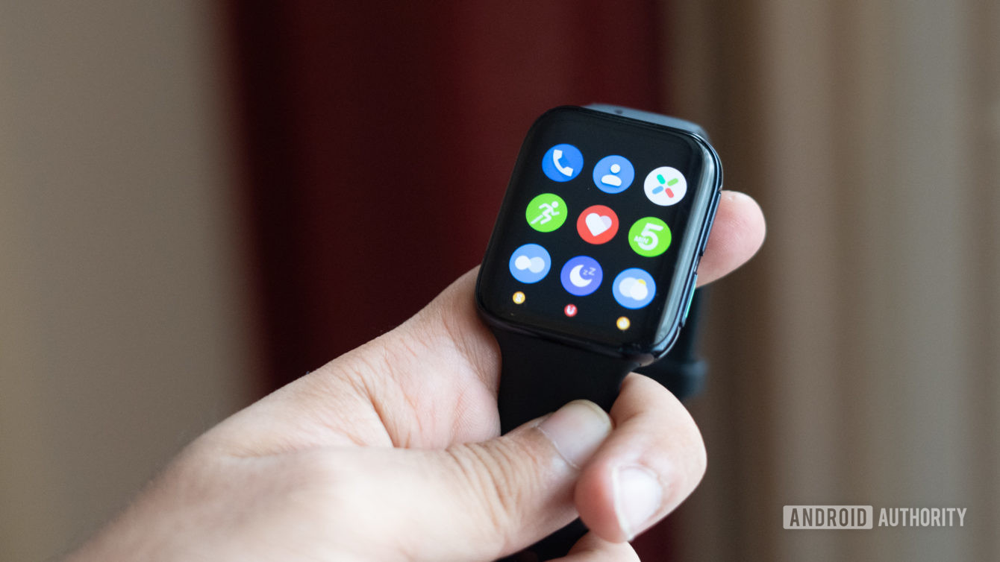

facebook
search
home
ondemand_video
storefront
groups
extension
Anirban
apps
forum
circle_notifications
arrow_drop_down_circle
Anirban D Sharma
See your profile.
rate_review
Give Feedback
Help us improve the new website.
settings
Settings & privacy
help
Help & support
dark_mode
Display & accessibility
logout
Log Out

Anirban D Sharma
Add bio
Posts
About
Friends
Photos
More
Posts
Posts
Posts
Posts